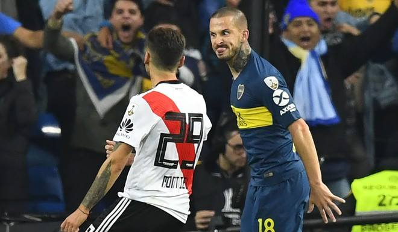

Darío "Pipa" Benedetto vuelve a Boca. El delantero de 31 años aseguró este martes en España que "está todo arreglado" para que se dé su regreso. Este miércoles volará rumbo a Argentina para hacerse la revisión médica y firmar su contrato con el "Xeneize".
En su primera etapa en el "Xeneize", el atacante anotó 45 goles en 76 partidos. Su pase pertenecía al Olympique de Marsella (Francia), mientras que se encontraba a préstamo en Elche (España). Justamente, Benedetto no fue parte del último encuentro frente a Villarreal y explicó el motivo. "Para este partido tenía una molestia en el aductor y preferí no arriesgar porque ya estaba hecho mi pase, por eso tampoco me entrené. Mañana (por el miércoles) ya viajo a Argentina", señaló en diálogo con radio Onda Cero.